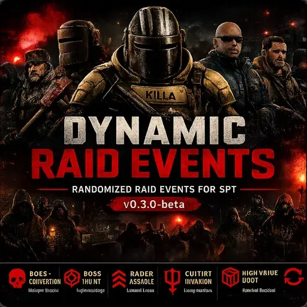

Dynamic Raid Events
- Downloads
- 2,443
- Favourites
- 43
- Mod lists
- 22
Dynamic Raid Events v0.3.0-beta
Welcome to the first public beta release of Dynamic Raid Events!
Dynamic Raid Events is a server-side mod for SPT that randomly selects configurable raid events before every raid, creating fresh and unpredictable gameplay without permanently modifying your game database.
Every event is automatically reverted after the raid ends, keeping your SPT installation clean while making every raid feel unique.
Features
- Randomized raid events
- Boss Convention
- Boss Hunt
- Raider Assault
- Cultist Invasion
- Loot Surge
- High Value Loot
- Configurable event weights
- Automatic rollback after each raid
- Server-side only
- JSON configuration
Compatibility
- ✅ SPT 4.0.13
- ✅ FIKA Compatible (Tested)
Installation
Extract the included SPT folder into your SPT installation.
SPT/
└── user/
└── mods/
└── DynamicRaidEvents/
Start the SPT Server and you’re ready to raid.
Initial Public Beta Notes
This is the first public beta release of Dynamic Raid Events.
While the core event framework is complete and fully playable, this is only the beginning. Community feedback will help shape future releases, balance changes, and entirely new event types.
Bug reports, suggestions, and feature requests are always welcome.
🚧 Roadmap
Dynamic Raid Events is actively being developed. Below are some of the ideas planned for future updates.
Planned Raid Events
- Dynamic Weather Events
- Rogue Takeover
- Scav Horde
- Sniper Ambush
- PMC Strike Team
- Cultist Ritual
- Supply Drop Event
- Extraction Lockdown
- Blackout Raid
- Timed Survival Events
Planned Features
- Map-specific event pools
- Event cooldowns and progression
- Event chaining (multiple events during a raid)
- Dynamic difficulty scaling
- Expanded loot modifiers
- Custom Event API for other mod authors
- Enhanced configuration options
- Additional FIKA compatibility testing and improvements
Long-Term Goals
- Seasonal event packs
- Community event suggestions
- Plugin support for custom events
- Optional compatibility with additional SPT mods
- Modular expansion packs
- Improved event balancing and customization
Community Feedback
Have an idea for a new raid event?
Found a bug?
Want to suggest a feature?
Please leave a comment on the Forge page or open an issue on GitHub. Community feedback is a huge part of this project’s future, and every suggestion is appreciated.
Source Code
GitHub Repository
https://github.com/CobraSnipper/DynamicRaidEvents
Latest Releases
https://github.com/CobraSnipper/DynamicRaidEvents/releases
Thank you for downloading Dynamic Raid Events.
This is only the beginning. Every raid tells a different story.
Version
0.3.0-beta
Initial Public Beta
This is the first public beta release of Dynamic Raid Events.
Features
- Randomized raid events
- Boss Convention
- Boss Hunt
- Raider Assault
- Cultist Invasion
- Loot Surge
- High Value Loot
- Configurable event weights
- Automatic rollback after each raid
- Server-side only
- JSON configuration With an “example config.json” 100% CONFIGURABLE
Compatibility
- SPT 4.0.13
- FIKA Compatible (tested)
Notes
This is a beta release. Feedback, bug reports, and feature requests are welcome.